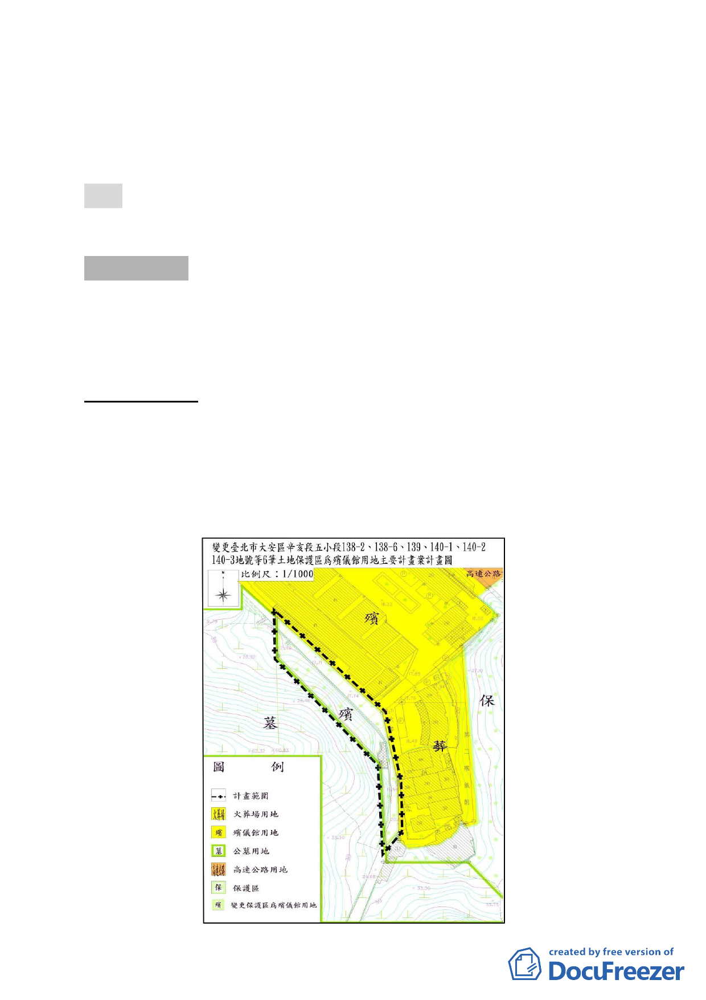

四、公民或團體所提意見：無。
五、申請單位：新芳春茶行兩合公司、興富發建設股份有限公司、
蔡金拋等 3 人。
六、法令依據：都市計畫法第 24 條。
決議：本案除計畫書第 5 頁之「修訂說明」應補述新建建物所使
用容積為何外，其餘照案通過。
討論事項 三
案名：變更臺北市大安區辛亥段五小段138-2、138-6、139、140-1、
140-2、140-3 地號等6筆土地保護區為殯儀館用地主要計畫
案
案情概要說明：
一、計畫範圍及面積：
本計畫區位於臺北市殯葬管理處所轄第二殯儀館館區內，
東、北兩側臨本市大安第9 公墓墓區，西、南兩側臨第二殯儀
館火化場及丁級禮堂，面積合計約0.28 公頃（詳下圖）。
-9-